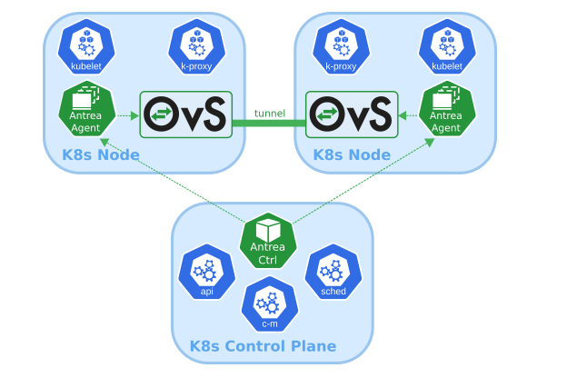
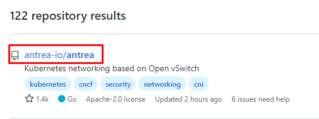
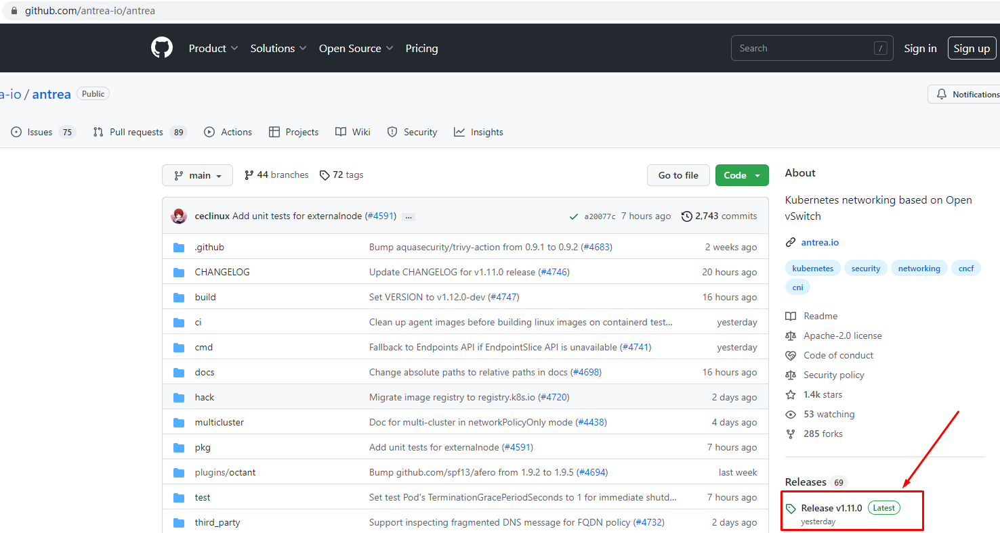
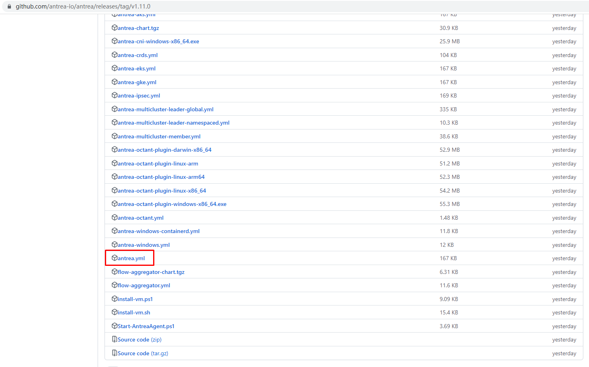
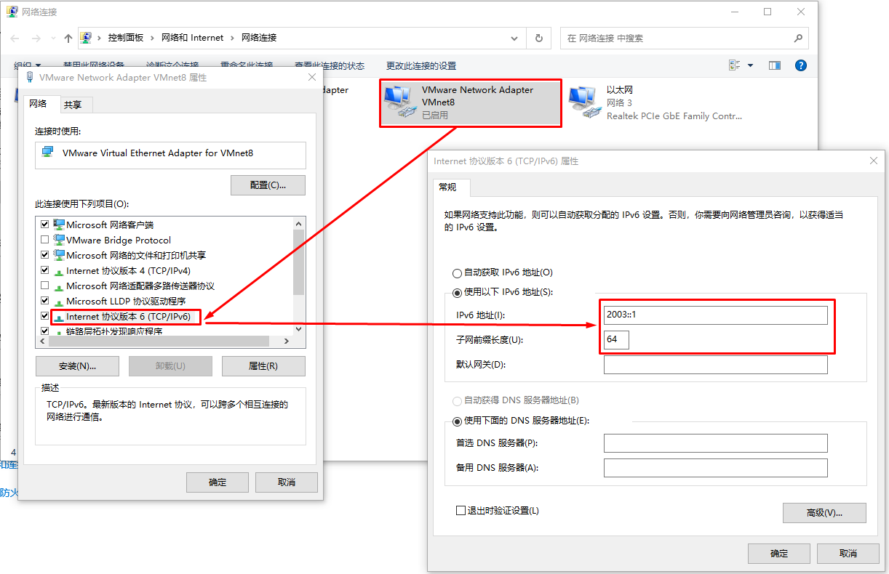
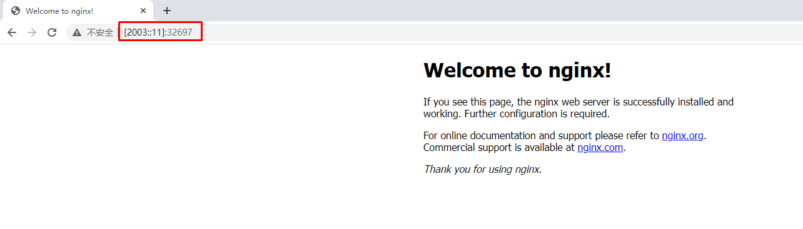

K8S 1.22版本双栈协议（IPv4&IPv6）集群部署¶
一、部署说明¶
此笔记主要针对 k8s 1.22，其它版本请自行测试使用。
必须使用Open vSwitch功能。
二、主机准备¶
2.1 主机名配置¶
由于本次使用3台主机完成kubernetes集群部署，其中1台为master节点,名称为k8s-master01;其中2台为worker节点，名称分别为：k8s-worker01及k8s-worker02
master节点
# hostnamectl set-hostname k8s-master01
worker01节点
# hostnamectl set-hostname k8s-worker01
worker02节点
# hostnamectl set-hostname k8s-worker02
2.2 主机IP地址配置¶
2.2.1 k8s-master节点¶
[root@k8s-master01 ~]# vim /etc/sysconfig/network-scripts/ifcfg-ens33
[root@k8s-master01 ~]# cat /etc/sysconfig/network-scripts/ifcfg-ens33
TYPE="Ethernet"
PROXY_METHOD="none"
BROWSER_ONLY="no"
BOOTPROTO="none"
DEFROUTE="yes"
IPV4_FAILURE_FATAL="no"
NAME="ens33"
UUID="063bfc1c-c7c2-4c62-89d0-35ae869e44e7"
DEVICE="ens33"
ONBOOT="yes"
IPADDR="192.168.10.160"
PREFIX="24"
GATEWAY="192.168.10.2"
DNS1="119.29.29.29"
IPV6INIT="yes"
IPV6_AUTOCONF="no"
IPV6_DEFROUTE="yes"
IPV6_FAILURE_FATAL="no"
IPV6_ADDR_GEN_MODE="stable-privacy"
IPV6ADDR=2003::11/64
IPV6_DEFAULTGW=2003::1
[root@k8s-master01 ~]# systemctl restart network
[root@k8s-master01 ~]# ip a s
2.2.2 k8s-worker01节点¶
[root@k8s-worker01 ~]# vim /etc/sysconfig/network-scripts/ifcfg-ens33
[root@k8s-worker01 ~]# cat /etc/sysconfig/network-scripts/ifcfg-ens33
TYPE="Ethernet"
PROXY_METHOD="none"
BROWSER_ONLY="no"
BOOTPROTO="none"
DEFROUTE="yes"
IPV4_FAILURE_FATAL="no"
NAME="ens33"
UUID="063bfc1c-c7c2-4c62-89d0-35ae869e44e7"
DEVICE="ens33"
ONBOOT="yes"
IPADDR="192.168.10.161"
PREFIX="24"
GATEWAY="192.168.10.2"
DNS1="119.29.29.29"
IPV6INIT="yes"
IPV6_AUTOCONF="no"
IPV6_DEFROUTE="yes"
IPV6_FAILURE_FATAL="no"
IPV6_ADDR_GEN_MODE="stable-privacy"
IPV6ADDR=2003::12/64
IPV6_DEFAULTGW=2003::1
[root@k8s-worker01 ~]# systemctl restart network
[root@k8s-worker01 ~]# ip a s
2.2.3 k8s-worker02节点¶
[root@k8s-worker02 ~]# vim /etc/sysconfig/network-scripts/ifcfg-ens33
[root@k8s-worker02 ~]# cat /etc/sysconfig/network-scripts/ifcfg-ens33
TYPE="Ethernet"
PROXY_METHOD="none"
BROWSER_ONLY="no"
BOOTPROTO="none"
DEFROUTE="yes"
IPV4_FAILURE_FATAL="no"
NAME="ens33"
UUID="063bfc1c-c7c2-4c62-89d0-35ae869e44e7"
DEVICE="ens33"
ONBOOT="yes"
IPADDR="192.168.10.162"
PREFIX="24"
GATEWAY="192.168.10.2"
DNS1="119.29.29.29"
IPV6INIT="yes"
IPV6_AUTOCONF="no"
IPV6_DEFROUTE="yes"
IPV6_FAILURE_FATAL="no"
IPV6_ADDR_GEN_MODE="stable-privacy"
IPV6ADDR=2003::13/64
IPV6_DEFAULTGW=2003::1
[root@k8s-worker02 ~]# systemctl restart network
[root@k8s-worker02 ~]# ip a s
2.2.4 在k8s-master上ping通ipv6地址¶
[root@k8s-master01 ~]# ping6 -c 4 2003::11
PING 2003::11(2003::11) 56 data bytes
64 bytes from 2003::11: icmp_seq=1 ttl=64 time=0.030 ms
64 bytes from 2003::11: icmp_seq=2 ttl=64 time=0.065 ms
64 bytes from 2003::11: icmp_seq=3 ttl=64 time=0.037 ms
64 bytes from 2003::11: icmp_seq=4 ttl=64 time=0.030 ms
--- 2003::11 ping statistics ---
4 packets transmitted, 4 received, 0% packet loss, time 3083ms
rtt min/avg/max/mdev = 0.030/0.040/0.065/0.015 ms
[root@k8s-master01 ~]# ping6 -c 4 2003::12
PING 2003::12(2003::12) 56 data bytes
64 bytes from 2003::12: icmp_seq=1 ttl=64 time=0.323 ms
64 bytes from 2003::12: icmp_seq=2 ttl=64 time=0.557 ms
64 bytes from 2003::12: icmp_seq=3 ttl=64 time=0.552 ms
64 bytes from 2003::12: icmp_seq=4 ttl=64 time=1.30 ms
--- 2003::12 ping statistics ---
4 packets transmitted, 4 received, 0% packet loss, time 3050ms
rtt min/avg/max/mdev = 0.323/0.685/1.308/0.371 ms
[root@k8s-master01 ~]# ping6 -c 4 2003::13
PING 2003::13(2003::13) 56 data bytes
64 bytes from 2003::13: icmp_seq=1 ttl=64 time=0.370 ms
64 bytes from 2003::13: icmp_seq=2 ttl=64 time=0.348 ms
64 bytes from 2003::13: icmp_seq=3 ttl=64 time=0.491 ms
64 bytes from 2003::13: icmp_seq=4 ttl=64 time=0.497 ms
--- 2003::13 ping statistics ---
4 packets transmitted, 4 received, 0% packet loss, time 3059ms
rtt min/avg/max/mdev = 0.348/0.426/0.497/0.071 ms
2.3 主机名解析¶
# vim /etc/hosts
# cat /etc/hosts
127.0.0.1 localhost localhost.localdomain localhost4 localhost4.localdomain4
::1 localhost localhost.localdomain localhost6 localhost6.localdomain6
192.168.10.160 k8s-master01
192.168.10.161 k8s-worker01
192.168.10.162 k8s-worker02
2003::11 k8s-master01
2003::12 k8s-worker01
2003::13 k8s-worker02
2.4 主机安全设置¶
所有主机均需操作。
# systemctl stop firewalld && systemctl disable firewalld
# sed -ri 's/SELINUX=enforcing/SELINUX=disabled/' /etc/selinux/config
2.5 升级操作系统内核¶
所有主机均需要操作。
导入elrepo gpg key
# rpm --import https://www.elrepo.org/RPM-GPG-KEY-elrepo.org
安装elrepo YUM源仓库
# yum -y install https://www.elrepo.org/elrepo-release-7.0-4.el7.elrepo.noarch.rpm
安装kernel-ml版本，ml为长期稳定版本，lt为长期维护版本
# yum --enablerepo="elrepo-kernel" -y install kernel-lt.x86_64
设置grub2默认引导为0
# grub2-set-default 0
重新生成grub2引导文件
# grub2-mkconfig -o /boot/grub2/grub.cfg
更新后，需要重启，使用升级的内核生效。
# reboot
重启后，需要验证内核是否为更新对应的版本
# uname -r
2.6 配置内核转发及网桥过滤¶
所有主机均需要操作。
添加网桥过滤及内核转发配置文件
# cat /etc/sysctl.d/k8s.conf
net.bridge.bridge-nf-call-ip6tables = 1
net.bridge.bridge-nf-call-iptables = 1
vm.swappiness = 0
加载br_netfilter模块
# modprobe br_netfilter
查看是否加载
# lsmod | grep br_netfilter
br_netfilter 22256 0
bridge 151336 1 br_netfilter
2.7 调整主机内核参数¶
# vim /etc/sysctl.conf
添加如下内容：
net.ipv4.ip_forward = 1
net.ipv6.conf.all.forwarding = 1
net.ipv4.ip_nonlocal_bind = 1
使其生效
# sysctl -p /etc/sysctl.conf
2.8 主机时钟同步设置¶
# crontab -e
0 */1 * * * ntpdate time1.aliyun.com
2.9 主机swap分区设置¶
临时关闭
# swapoff -a
永远关闭swap分区，需要重启操作系统
# cat /etc/fstab
......
# /dev/mapper/centos-swap swap swap defaults 0 0
在上一行中行首添加#
2.10 Open vSwitch¶
下载地址链接：http://www.openvswitch.org/download/
OVS
安装依赖
# yum -y install openssl openssl-devel
查看是否存在python3
# yum list python3
安装依赖
# yum install python3 python3-devel -y
下载软件源码包
# wget https://www.openvswitch.org/releases/openvswitch-2.16.2.tar.gz
解压
# tar -xf openvswitch-2.16.2.tar.gz
# cd openvswitch-2.16.2/
[root@k8s-XXX openvswitch-2.16.2]# ./configure
[root@k8s-XXX openvswitch-2.16.2]# make
[root@k8s-XXX openvswitch-2.16.2]# make install
加载模块至内核
# modprobe openvswitch
# lsmod | grep openvswitch
openvswitch 139264 2
nsh 16384 1 openvswitch
nf_conncount 24576 1 openvswitch
nf_nat 45056 5 ip6table_nat,xt_nat,openvswitch,iptable_nat,xt_MASQUERADE
nf_conntrack 147456 8 xt_conntrack,nf_nat,nfnetlink_cttimeout,xt_nat,openvswitch,nf_conntrack_netlink,nf_conncount,xt_MASQUERADE
nf_defrag_ipv6 24576 2 nf_conntrack,openvswitch
libcrc32c 16384 4 nf_conntrack,nf_nat,openvswitch,xfs
三、Docker安装¶
3.1 Docker安装YUM源准备¶
使用阿里云开源软件镜像站。
# wget https://mirrors.aliyun.com/docker-ce/linux/centos/docker-ce.repo -O /etc/yum.repos.d/docker-ce.repo
3.2 Docker安装¶
# yum -y install docker-ce-20.10.17 docke-ce-cli-20.10.17
3.3 启动Docker服务¶
# systemctl enable --now docker
3.4 修改cgroup方式¶
/etc/docker/daemon.json 默认没有此文件，需要单独创建
在/etc/docker/daemon.json添加如下内容
# cat /etc/docker/daemon.json
{
"exec-opts": ["native.cgroupdriver=systemd"]
}
# systemctl restart docker
四、k8s软件安装¶
4.1 YUM源准备¶
# vim /etc/yum.repos.d/k8s.repo
# cat /etc/yum.repos.d/k8s.repo
[kubernetes]
name=Kubernetes
baseurl=https://mirrors.aliyun.com/kubernetes/yum/repos/kubernetes-el7-x86_64/
enabled=1
gpgcheck=0
repo_gpgcheck=0
gpgkey=https://mirrors.aliyun.com/kubernetes/yum/doc/yum-key.gpg https://mirrors.aliyun.com/kubernetes/yum/doc/rpm-package-key.gpg
4.2 K8S软件安装及kubelet配置¶
4.2.1 软件安装¶
# yum -y install kubeadm-1.22.11-0 kubelet-1.22.11-0 kubectl-1.22.11-0
4.2.2 kubelet配置¶
为了实现docker使用的cgroupdriver与kubelet使用的cgroup的一致性，建议修改如下文件内容。
# vim /etc/sysconfig/kubelet
KUBELET_EXTRA_ARGS="--cgroup-driver=systemd"
设置kubelet为开机自启动即可，由于没有生成配置文件，集群初始化后自动启动
# systemctl enable kubelet
4.3 K8S集群初始化配置文件准备¶
默认 Kubernetes 下每个 node 使用 /24 掩码为 Pod 分配 IPv4 地址，使用 /64 掩码为 Pod 分配 IPv6 地址。可以通过 Controller-manager 参数调整掩码大小，本文会将 IPv4 掩码调整为 /25，IPv6 掩码调整为 /80。
（k8s 强制限制 node 掩码不能比 CIDR 掩码小 16 以上，因此当 IPv6 CIDR 使用 /64 得掩码时，node 掩码不能大于 /80
[root@k8s-master01 ~]# vim kubeadm-config.yaml
[root@k8s-master01 ~]# cat kubeadm-config.yaml
apiVersion: kubeadm.k8s.io/v1beta3
kind: ClusterConfiguration
networking:
podSubnet: 10.244.0.0/16,2004::/64
serviceSubnet: 10.96.0.0/16,2005::/110
controllerManager:
extraArgs:
"node-cidr-mask-size-ipv4": "25"
"node-cidr-mask-size-ipv6": "80"
imageRepository: ""
clusterName: "smartgo-cluster"
kubernetesVersion: "v1.22.11"
---
apiVersion: kubeadm.k8s.io/v1beta3
kind: InitConfiguration
localAPIEndpoint:
advertiseAddress: "192.168.10.160"
bindPort: 6443
nodeRegistration:
kubeletExtraArgs:
node-ip: 192.168.10.160,2003::11
4.4 K8S集群初始化¶
[root@k8s-master01 ~]# kubeadm init --config=kubeadm-config.yaml
输出信息：
[init] Using Kubernetes version: v1.22.11
[preflight] Running pre-flight checks
[WARNING Service-Kubelet]: kubelet service is not enabled, please run 'systemctl enable kubelet.service'
[preflight] Pulling images required for setting up a Kubernetes cluster
[preflight] This might take a minute or two, depending on the speed of your internet connection
[preflight] You can also perform this action in beforehand using 'kubeadm config images pull'
[certs] Using certificateDir folder "/etc/kubernetes/pki"
[certs] Generating "ca" certificate and key
[certs] Generating "apiserver" certificate and key
[certs] apiserver serving cert is signed for DNS names [k8s-master01 kubernetes kubernetes.default kubernetes.default.svc kubernetes.default.svc.cluster.local] and IPs [10.96.0.1 192.168.10.160]
[certs] Generating "apiserver-kubelet-client" certificate and key
[certs] Generating "front-proxy-ca" certificate and key
[certs] Generating "front-proxy-client" certificate and key
[certs] Generating "etcd/ca" certificate and key
[certs] Generating "etcd/server" certificate and key
[certs] etcd/server serving cert is signed for DNS names [k8s-master01 localhost] and IPs [192.168.10.160 127.0.0.1 ::1]
[certs] Generating "etcd/peer" certificate and key
[certs] etcd/peer serving cert is signed for DNS names [k8s-master01 localhost] and IPs [192.168.10.160 127.0.0.1 ::1]
[certs] Generating "etcd/healthcheck-client" certificate and key
[certs] Generating "apiserver-etcd-client" certificate and key
[certs] Generating "sa" key and public key
[kubeconfig] Using kubeconfig folder "/etc/kubernetes"
[kubeconfig] Writing "admin.conf" kubeconfig file
[kubeconfig] Writing "kubelet.conf" kubeconfig file
[kubeconfig] Writing "controller-manager.conf" kubeconfig file
[kubeconfig] Writing "scheduler.conf" kubeconfig file
[kubelet-start] Writing kubelet environment file with flags to file "/var/lib/kubelet/kubeadm-flags.env"
[kubelet-start] Writing kubelet configuration to file "/var/lib/kubelet/config.yaml"
[kubelet-start] Starting the kubelet
[control-plane] Using manifest folder "/etc/kubernetes/manifests"
[control-plane] Creating static Pod manifest for "kube-apiserver"
[control-plane] Creating static Pod manifest for "kube-controller-manager"
[control-plane] Creating static Pod manifest for "kube-scheduler"
[etcd] Creating static Pod manifest for local etcd in "/etc/kubernetes/manifests"
[wait-control-plane] Waiting for the kubelet to boot up the control plane as static Pods from directory "/etc/kubernetes/manifests". This can take up to 4m0s
[apiclient] All control plane components are healthy after 5.501915 seconds
[upload-config] Storing the configuration used in ConfigMap "kubeadm-config" in the "kube-system" Namespace
[kubelet] Creating a ConfigMap "kubelet-config" in namespace kube-system with the configuration for the kubelets in the cluster
[upload-certs] Skipping phase. Please see --upload-certs
[mark-control-plane] Marking the node k8s-master01 as control-plane by adding the labels: [node-role.kubernetes.io/control-plane node.kubernetes.io/exclude-from-external-load-balancers]
[mark-control-plane] Marking the node k8s-master01 as control-plane by adding the taints [node-role.kubernetes.io/control-plane:NoSchedule]
[bootstrap-token] Using token: tf68fl.pj4xsh62osypb4bj
[bootstrap-token] Configuring bootstrap tokens, cluster-info ConfigMap, RBAC Roles
[bootstrap-token] Configured RBAC rules to allow Node Bootstrap tokens to get nodes
[bootstrap-token] Configured RBAC rules to allow Node Bootstrap tokens to post CSRs in order for nodes to get long term certificate credentials
[bootstrap-token] Configured RBAC rules to allow the csrapprover controller automatically approve CSRs from a Node Bootstrap Token
[bootstrap-token] Configured RBAC rules to allow certificate rotation for all node client certificates in the cluster
[bootstrap-token] Creating the "cluster-info" ConfigMap in the "kube-public" namespace
[kubelet-finalize] Updating "/etc/kubernetes/kubelet.conf" to point to a rotatable kubelet client certificate and key
[addons] Applied essential addon: CoreDNS
[addons] Applied essential addon: kube-proxy
Your Kubernetes control-plane has initialized successfully!
To start using your cluster, you need to run the following as a regular user:
mkdir -p $HOME/.kube
sudo cp -i /etc/kubernetes/admin.conf $HOME/.kube/config
sudo chown $(id -u):$(id -g) $HOME/.kube/config
Alternatively, if you are the root user, you can run:
export KUBECONFIG=/etc/kubernetes/admin.conf
You should now deploy a pod network to the cluster.
Run "kubectl apply -f [podnetwork].yaml" with one of the options listed at:
https://kubernetes.io/docs/concepts/cluster-administration/addons/
Then you can join any number of worker nodes by running the following on each as root:
kubeadm join 192.168.10.160:6443 --token tf68fl.pj4xsh62osypb4bj \
--discovery-token-ca-cert-hash sha256:e4960afef684bbee72ae904356321997a6eef5bb0394a8d74b72ebaa0b638ecd
[root@k8s-master01 ~]# mkdir -p $HOME/.kube
[root@k8s-master01 ~]# sudo cp -i /etc/kubernetes/admin.conf $HOME/.kube/config
[root@k8s-master01 ~]# sudo chown $(id -u):$(id -g) $HOME/.kube/config
[root@k8s-master01 ~]# kubectl get nodes
NAME STATUS ROLES AGE VERSION
k8s-master01 NotReady control-plane 2m5s v1.22.11
4.5 把工作节点添加到K8S集群¶
4.5.1 创建kubeadm-config.yaml文件¶
用于添加worker节点
[root@k8s-worker01 ~]# vim kubeadm-config.yaml
[root@k8s-worker01 ~]# cat kubeadm-config.yaml
apiVersion: kubeadm.k8s.io/v1beta3
kind: JoinConfiguration
discovery:
bootstrapToken:
apiServerEndpoint: 192.168.10.160:6443
token: "tf68fl.pj4xsh62osypb4bj"
caCertHashes:
- "sha256:e4960afef684bbee72ae904356321997a6eef5bb0394a8d74b72ebaa0b638ecd"
nodeRegistration:
kubeletExtraArgs:
node-ip: 192.168.10.161,2003::12
[root@k8s-worker01 ~]# kubeadm join --config=kubeadm-config.yaml
[preflight] Running pre-flight checks
[WARNING Service-Kubelet]: kubelet service is not enabled, please run 'systemctl enable kubelet.service'
[preflight] Reading configuration from the cluster...
[preflight] FYI: You can look at this config file with 'kubectl -n kube-system get cm kubeadm-config -o yaml'
[kubelet-start] Writing kubelet configuration to file "/var/lib/kubelet/config.yaml"
[kubelet-start] Writing kubelet environment file with flags to file "/var/lib/kubelet/kubeadm-flags.env"
[kubelet-start] Starting the kubelet
[kubelet-start] Waiting for the kubelet to perform the TLS Bootstrap...
This node has joined the cluster:
* Certificate signing request was sent to apiserver and a response was received.
* The Kubelet was informed of the new secure connection details.
Run 'kubectl get nodes' on the control-plane to see this node join the cluster.
[root@k8s-master01 ~]# kubectl get nodes
NAME STATUS ROLES AGE VERSION
k8s-master01 NotReady control-plane 16m v1.22.11
k8s-worker01 NotReady <none> 88s v1.22.11
[root@k8s-worker02 ~]# vim kubeadm-config.yaml
[root@k8s-worker02 ~]# cat kubeadm-config.yaml
apiVersion: kubeadm.k8s.io/v1beta3
kind: JoinConfiguration
discovery:
bootstrapToken:
apiServerEndpoint: 192.168.10.160:6443
token: "tf68fl.pj4xsh62osypb4bj"
caCertHashes:
- "sha256:e4960afef684bbee72ae904356321997a6eef5bb0394a8d74b72ebaa0b638ecd"
nodeRegistration:
kubeletExtraArgs:
node-ip: 192.168.10.162,2003::13
[root@k8s-worker02 ~]# kubeadm join --config=kubeadm-config.yaml
[preflight] Running pre-flight checks
[WARNING Service-Kubelet]: kubelet service is not enabled, please run 'systemctl enable kubelet.service'
[preflight] Reading configuration from the cluster...
[preflight] FYI: You can look at this config file with 'kubectl -n kube-system get cm kubeadm-config -o yaml'
[kubelet-start] Writing kubelet configuration to file "/var/lib/kubelet/config.yaml"
[kubelet-start] Writing kubelet environment file with flags to file "/var/lib/kubelet/kubeadm-flags.env"
[kubelet-start] Starting the kubelet
[kubelet-start] Waiting for the kubelet to perform the TLS Bootstrap...
This node has joined the cluster:
* Certificate signing request was sent to apiserver and a response was received.
* The Kubelet was informed of the new secure connection details.
Run 'kubectl get nodes' on the control-plane to see this node join the cluster.
[root@k8s-master01 ~]# kubectl get nodes
NAME STATUS ROLES AGE VERSION
k8s-master01 NotReady control-plane 19m v1.22.11
k8s-worker01 NotReady <none> 4m44s v1.22.11
k8s-worker02 NotReady <none> 31s v1.22.11
五、网络工具Antrea部署¶
5.0 认识Antrea¶
Antrea 是一个旨在成为 Kubernetes 原生的Kubernetes网络解决方案。它在第 ¾ 层运行，利用Open vSwitch作为网络数据平面，为 Kubernetes 集群提供网络和安全服务 。

Open vSwitch 是一种广泛采用的高性能可编程虚拟交换机；Antrea 利用它来实现 Pod 网络和安全功能。例如，Open vSwitch 使 Antrea 能够以非常有效的方式实施 Kubernetes 网络策略。
5.1 获取antrea部署文件¶



[root@k8s-master01 ~]# wget https://github.com/antrea-io/antrea/releases/download/v1.11.0/antrea.yml
5.2 修改antrea部署文件¶
1、禁用overlay封装模式及SNAT模式
2、配置Service的IPv4及IPv6地址段。
[root@k8s-master01 ~]# vim antrea.yml
3022 trafficEncapMode: "encap"
3023
3024 # Whether or not to SNAT (using the Node IP) the egress traffic from a Pod to the external network.
3025 # This option is for the noEncap traffic mode only, and the default value is false. In the noEncap
3026 # mode, if the cluster's Pod CIDR is reachable from the external network, then the Pod traffic to
3027 # the external network needs not be SNAT'd. In the networkPolicyOnly mode, antrea-agent never
3028 # performs SNAT and this option will be ignored; for other modes it must be set to false.
3029 noSNAT: false
3022 trafficEncapMode: "noencap"
3023
3024 # Whether or not to SNAT (using the Node IP) the egress traffic from a Pod to the external network.
3025 # This option is for the noEncap traffic mode only, and the default value is false. In the noEncap
3026 # mode, if the cluster's Pod CIDR is reachable from the external network, then the Pod traffic to
3027 # the external network needs not be SNAT'd. In the networkPolicyOnly mode, antrea-agent never
3028 # performs SNAT and this option will be ignored; for other modes it must be set to false.
3029 noSNAT: true
3097 serviceCIDR: ""
3098
3099 # ClusterIP CIDR range for IPv6 Services. It's required when using kube-proxy to provide IPv6 Service in a Dual-Stack
3100 # cluster or an IPv6 only cluster. The value should be the same as the configuration for kube-apiserver specified by
3101 # --service-cluster-ip-range. When AntreaProxy is enabled, this parameter is not needed.
3102 # No default value for this field.
3103 serviceCIDRv6: ""
3097 serviceCIDR: "10.96.0.0/16"
3098
3099 # ClusterIP CIDR range for IPv6 Services. It's required when using kube-proxy to provide IPv6 Service in a Dual-Stack
3100 # cluster or an IPv6 only cluster. The value should be the same as the configuration for kube-apiserver specified by
3101 # --service-cluster-ip-range. When AntreaProxy is enabled, this parameter is not needed.
3102 # No default value for this field.
3103 serviceCIDRv6: "2005::/110"
5.3 应用antrea部署文件¶
[root@k8s-master01 ~]# kubectl create -f antrea.yml
输出内容：
customresourcedefinition.apiextensions.k8s.io/antreaagentinfos.crd.antrea.io created
customresourcedefinition.apiextensions.k8s.io/antreacontrollerinfos.crd.antrea.io created
customresourcedefinition.apiextensions.k8s.io/clustergroups.crd.antrea.io created
customresourcedefinition.apiextensions.k8s.io/clusternetworkpolicies.crd.antrea.io created
customresourcedefinition.apiextensions.k8s.io/egresses.crd.antrea.io created
customresourcedefinition.apiextensions.k8s.io/externalentities.crd.antrea.io created
customresourcedefinition.apiextensions.k8s.io/externalippools.crd.antrea.io created
customresourcedefinition.apiextensions.k8s.io/externalnodes.crd.antrea.io created
customresourcedefinition.apiextensions.k8s.io/ippools.crd.antrea.io created
customresourcedefinition.apiextensions.k8s.io/networkpolicies.crd.antrea.io created
customresourcedefinition.apiextensions.k8s.io/supportbundlecollections.crd.antrea.io created
customresourcedefinition.apiextensions.k8s.io/tiers.crd.antrea.io created
customresourcedefinition.apiextensions.k8s.io/traceflows.crd.antrea.io created
customresourcedefinition.apiextensions.k8s.io/trafficcontrols.crd.antrea.io created
serviceaccount/antrea-agent created
serviceaccount/antctl created
serviceaccount/antrea-controller created
secret/antrea-agent-service-account-token created
secret/antctl-service-account-token created
configmap/antrea-config created
customresourcedefinition.apiextensions.k8s.io/groups.crd.antrea.io created
clusterrole.rbac.authorization.k8s.io/antrea-agent created
clusterrole.rbac.authorization.k8s.io/antctl created
clusterrole.rbac.authorization.k8s.io/antrea-cluster-identity-reader created
clusterrole.rbac.authorization.k8s.io/antrea-controller created
clusterrole.rbac.authorization.k8s.io/aggregate-antrea-policies-edit created
clusterrole.rbac.authorization.k8s.io/aggregate-antrea-policies-view created
clusterrole.rbac.authorization.k8s.io/aggregate-traceflows-edit created
clusterrole.rbac.authorization.k8s.io/aggregate-traceflows-view created
clusterrole.rbac.authorization.k8s.io/aggregate-antrea-clustergroups-edit created
clusterrole.rbac.authorization.k8s.io/aggregate-antrea-clustergroups-view created
clusterrolebinding.rbac.authorization.k8s.io/antrea-agent created
clusterrolebinding.rbac.authorization.k8s.io/antctl created
clusterrolebinding.rbac.authorization.k8s.io/antrea-controller created
service/antrea created
daemonset.apps/antrea-agent created
deployment.apps/antrea-controller created
apiservice.apiregistration.k8s.io/v1beta2.controlplane.antrea.io created
apiservice.apiregistration.k8s.io/v1beta1.system.antrea.io created
apiservice.apiregistration.k8s.io/v1alpha1.stats.antrea.io created
mutatingwebhookconfiguration.admissionregistration.k8s.io/crdmutator.antrea.io created
validatingwebhookconfiguration.admissionregistration.k8s.io/crdvalidator.antrea.io created
5.4 验证antrea部署是否成功¶
[root@k8s-master01 ~]# kubectl get pods -n kube-system
NAME READY STATUS RESTARTS AGE
antrea-agent-2fzm4 2/2 Running 0 99s
antrea-agent-9jp7g 2/2 Running 0 99s
antrea-agent-vkmk4 2/2 Running 0 99s
antrea-controller-789587f966-j62zq 1/1 Running 0 99s
coredns-787d4945fb-82tmg 1/1 Running 0 37m
coredns-787d4945fb-vdsln 1/1 Running 0 37m
etcd-k8s-master01 1/1 Running 0 38m
kube-apiserver-k8s-master01 1/1 Running 0 38m
kube-controller-manager-k8s-master01 1/1 Running 0 38m
kube-proxy-4pvpv 1/1 Running 0 37m
kube-proxy-4szqs 1/1 Running 0 18m
kube-proxy-sl8h5 1/1 Running 0 23m
kube-scheduler-k8s-master01 1/1 Running 0 38m
5.5 查看K8S集群节点主机路由信息¶
[root@k8s-master01 ~]# route
Kernel IP routing table
Destination Gateway Genmask Flags Metric Ref Use Iface
default gateway 0.0.0.0 UG 100 0 0 ens33
10.244.0.0 0.0.0.0 255.255.255.128 U 0 0 0 antrea-gw0
10.244.0.128 k8s-worker01 255.255.255.128 UG 0 0 0 ens33
10.244.1.0 k8s-worker02 255.255.255.128 UG 0 0 0 ens33
172.17.0.0 0.0.0.0 255.255.0.0 U 0 0 0 docker0
192.168.10.0 0.0.0.0 255.255.255.0 U 100 0 0 ens33
192.168.122.0 0.0.0.0 255.255.255.0 U 0 0 0 virbr0
[root@k8s-master01 ~]# route -6
Kernel IPv6 routing table
Destination Next Hop Flag Met Ref Use If
[::]/96 [::] !n 1024 2 0 lo
0.0.0.0/96 [::] !n 1024 2 0 lo
2002:a00::/24 [::] !n 1024 1 0 lo
2002:7f00::/24 [::] !n 1024 2 0 lo
2002:a9fe::/32 [::] !n 1024 1 0 lo
2002:ac10::/28 [::] !n 1024 2 0 lo
2002:c0a8::/32 [::] !n 1024 1 0 lo
2002:e000::/19 [::] !n 1024 4 0 lo
2003::/64 [::] U 100 7 0 ens33
2004::/80 [::] U 256 3 0 antrea-gw0
2004::1:0:0:0/80 k8s-worker01 UG 1024 1 0 ens33
2004::2:0:0:0/80 k8s-worker02 UG 1024 1 0 ens33
3ffe:ffff::/32 [::] !n 1024 1 0 lo
fe80::/64 [::] U 100 1 0 ens33
[::]/0 gateway UG 100 5 0 ens33
localhost/128 [::] Un 0 7 0 lo
2003::/128 [::] Un 0 3 0 ens33
k8s-master01/128 [::] Un 0 8 0 ens33
2004::/128 [::] Un 0 3 0 antrea-gw0
k8s-master01/128 [::] Un 0 3 0 antrea-gw0
fe80::/128 [::] Un 0 3 0 ens33
fe80::/128 [::] Un 0 3 0 antrea-gw0
k8s-master01/128 [::] Un 0 4 0 ens33
k8s-master01/128 [::] Un 0 3 0 antrea-gw0
ff00::/8 [::] U 256 3 0 ens33
ff00::/8 [::] U 256 2 0 antrea-gw0
[::]/0 [::] !n -1 1 0 lo
需要在外部设备上设置静态路由使得pod可路由
六、测试双栈协议可用性¶
6.1 IPv6访问测试¶
[root@k8s-master01 ~]# vim deployment.yaml
[root@k8s-master01 ~]# cat deployment.yaml
apiVersion: apps/v1
kind: Deployment
metadata:
labels:
app: nginxweb
name: nginxweb
spec:
replicas: 2
selector:
matchLabels:
app: nginxweb
template:
metadata:
labels:
app: nginxweb
spec:
containers:
- name: nginxweb
image: nginx:latest
imagePullPolicy: IfNotPresent
ports:
- containerPort: 80
name: http
protocol: TCP
[root@k8s-master01 ~]# kubectl apply -f deployment.yaml
deployment.apps/nginxweb created
[root@k8s-master01 ~]# kubectl get pods
NAME READY STATUS RESTARTS AGE
nginxweb-5c77c86f4d-9fdgh 1/1 Running 0 4s
nginxweb-5c77c86f4d-hzk6x 1/1 Running 0 4s
[root@k8s-master01 ~]# kubectl get pods -o yaml | grep ip
- ip: 10.244.0.130
- ip: 2004::1:0:0:2
- ip: 10.244.1.2
- ip: 2004::2:0:0:2
[root@k8s-master01 ~]# kubectl describe pods nginxweb-5c77c86f4d-9fdgh
Name: nginxweb-5c77c86f4d-9fdgh
Namespace: default
Priority: 0
Node: k8s-worker01/192.168.10.161
Start Time: Fri, 24 Mar 2023 19:56:16 +0800
Labels: app=nginxweb
pod-template-hash=5c77c86f4d
Annotations: <none>
Status: Running
IP: 10.244.0.130
IPs:
IP: 10.244.0.130
IP: 2004::1:0:0:2
Controlled By: ReplicaSet/nginxweb-5c77c86f4d
Containers:
nginxweb:
Container ID: docker://68139623df054e7eb47f8a0fdb3891dc36c926ef36edc5b4c4dc25e81ffe3d01
Image: nginx:latest
Image ID: docker-pullable://nginx@sha256:617661ae7846a63de069a85333bb4778a822f853df67fe46a688b3f0e4d9cb87
Port: 80/TCP
Host Port: 0/TCP
State: Running
Started: Fri, 24 Mar 2023 19:56:18 +0800
Ready: True
Restart Count: 0
Environment: <none>
Mounts:
/var/run/secrets/kubernetes.io/serviceaccount from kube-api-access-dgjq4 (ro)
Conditions:
Type Status
Initialized True
Ready True
ContainersReady True
PodScheduled True
Volumes:
kube-api-access-dgjq4:
Type: Projected (a volume that contains injected data from multiple sources)
TokenExpirationSeconds: 3607
ConfigMapName: kube-root-ca.crt
ConfigMapOptional: <nil>
DownwardAPI: true
QoS Class: BestEffort
Node-Selectors: <none>
Tolerations: node.kubernetes.io/not-ready:NoExecute op=Exists for 300s
node.kubernetes.io/unreachable:NoExecute op=Exists for 300s
Events:
Type Reason Age From Message
---- ------ ---- ---- -------
Normal Scheduled 75s default-scheduler Successfully assigned default/nginxweb-5c77c86f4d-9fdgh to k8s-worker01
Normal Pulled 74s kubelet Container image "nginx:latest" already present on machine
Normal Created 74s kubelet Created container nginxweb
Normal Started 73s kubelet Started container nginxweb
[root@k8s-master01 ~]# ping6 2004::1:0:0:2
PING 2004::1:0:0:2(2004::1:0:0:2) 56 data bytes
64 bytes from 2004::1:0:0:2: icmp_seq=8 ttl=62 time=2049 ms
64 bytes from 2004::1:0:0:2: icmp_seq=9 ttl=62 time=1024 ms
64 bytes from 2004::1:0:0:2: icmp_seq=10 ttl=62 time=2.42 ms
64 bytes from 2004::1:0:0:2: icmp_seq=11 ttl=62 time=0.370 ms
64 bytes from 2004::1:0:0:2: icmp_seq=12 ttl=62 time=0.651 ms
64 bytes from 2004::1:0:0:2: icmp_seq=13 ttl=62 time=1.30 ms
[root@k8s-master01 ~]# ping6 2004::2:0:0:2
PING 2004::2:0:0:2(2004::2:0:0:2) 56 data bytes
64 bytes from 2004::2:0:0:2: icmp_seq=1 ttl=62 time=1.35 ms
64 bytes from 2004::2:0:0:2: icmp_seq=2 ttl=62 time=1.24 ms
[root@k8s-master01 ~]# curl -g -6 [2004::1:0:0:2]
<!DOCTYPE html>
<html>
<head>
<title>Welcome to nginx!</title>
<style>
html { color-scheme: light dark; }
body { width: 35em; margin: 0 auto;
font-family: Tahoma, Verdana, Arial, sans-serif; }
</style>
</head>
<body>
<h1>Welcome to nginx!</h1>
<p>If you see this page, the nginx web server is successfully installed and
working. Further configuration is required.</p>
<p>For online documentation and support please refer to
<a href="http://nginx.org/">nginx.org</a>.<br/>
Commercial support is available at
<a href="http://nginx.com/">nginx.com</a>.</p>
<p><em>Thank you for using nginx.</em></p>
</body>
</html>
[root@k8s-master01 ~]# curl -g -6 [2004::2:0:0:2]
<!DOCTYPE html>
<html>
<head>
<title>Welcome to nginx!</title>
<style>
html { color-scheme: light dark; }
body { width: 35em; margin: 0 auto;
font-family: Tahoma, Verdana, Arial, sans-serif; }
</style>
</head>
<body>
<h1>Welcome to nginx!</h1>
<p>If you see this page, the nginx web server is successfully installed and
working. Further configuration is required.</p>
<p>For online documentation and support please refer to
<a href="http://nginx.org/">nginx.org</a>.<br/>
Commercial support is available at
<a href="http://nginx.com/">nginx.com</a>.</p>
<p><em>Thank you for using nginx.</em></p>
</body>
</html>
6.2 双栈service测试¶
Kubernetes Service 的 IPv4 family 支持下列选项，默认为 IPv4 SingleStack：
- SingleStack
- PreferDualStack
- RequireDualStack
[root@k8s-master01 ~]# vim service.yaml
[root@k8s-master01 ~]# cat service.yaml
apiVersion: v1
kind: Service
metadata:
name: nginxweb-v6
spec:
selector:
app: nginxweb
ports:
- protocol: TCP
port: 80
targetPort: 80
type: NodePort
ipFamilyPolicy: RequireDualStack
[root@k8s-master01 ~]# kubectl create -f service.yaml
service/nginxweb-v6 created
[root@k8s-master01 ~]# kubectl get svc
NAME TYPE CLUSTER-IP EXTERNAL-IP PORT(S) AGE
kubernetes ClusterIP 10.96.0.1 <none> 443/TCP 63m
nginxweb-v6 NodePort 10.96.53.221 <none> 80:32697/TCP 22s
[root@k8s-master01 ~]# kubectl get svc -o yaml
apiVersion: v1
items:
- apiVersion: v1
kind: Service
metadata:
creationTimestamp: "2023-03-24T11:12:51Z"
labels:
component: apiserver
provider: kubernetes
name: kubernetes
namespace: default
resourceVersion: "205"
uid: d1884296-7060-4dab-961b-3537de7490d0
spec:
clusterIP: 10.96.0.1
clusterIPs:
- 10.96.0.1
internalTrafficPolicy: Cluster
ipFamilies:
- IPv4
ipFamilyPolicy: SingleStack
ports:
- name: https
port: 443
protocol: TCP
targetPort: 6443
sessionAffinity: None
type: ClusterIP
status:
loadBalancer: {}
- apiVersion: v1
kind: Service
metadata:
creationTimestamp: "2023-03-24T12:16:26Z"
name: nginxweb-v6
namespace: default
resourceVersion: "6905"
uid: c2baa4f5-1ec8-43d3-9fc9-77f9236a4eba
spec:
clusterIP: 10.96.53.221
clusterIPs:
- 10.96.53.221
- 2005::2c47
externalTrafficPolicy: Cluster
internalTrafficPolicy: Cluster
ipFamilies:
- IPv4
- IPv6
ipFamilyPolicy: RequireDualStack
ports:
- nodePort: 32697
port: 80
protocol: TCP
targetPort: 80
selector:
app: nginxweb
sessionAffinity: None
type: NodePort
status:
loadBalancer: {}
kind: List
metadata:
resourceVersion: ""
selfLink: ""
[root@k8s-master01 ~]# kubectl describe svc nginxweb-v6
Name: nginxweb-v6
Namespace: default
Labels: <none>
Annotations: <none>
Selector: app=nginxweb
Type: NodePort
IP Family Policy: RequireDualStack
IP Families: IPv4,IPv6
IP: 10.96.53.221
IPs: 10.96.53.221,2005::2c47
Port: <unset> 80/TCP
TargetPort: 80/TCP
NodePort: <unset> 32697/TCP
Endpoints: 10.244.0.130:80,10.244.1.2:80
Session Affinity: None
External Traffic Policy: Cluster
Events: <none>
[root@k8s-master01 ~]# curl -g -6 [2005::2c47]
<!DOCTYPE html>
<html>
<head>
<title>Welcome to nginx!</title>
<style>
html { color-scheme: light dark; }
body { width: 35em; margin: 0 auto;
font-family: Tahoma, Verdana, Arial, sans-serif; }
</style>
</head>
<body>
<h1>Welcome to nginx!</h1>
<p>If you see this page, the nginx web server is successfully installed and
working. Further configuration is required.</p>
<p>For online documentation and support please refer to
<a href="http://nginx.org/">nginx.org</a>.<br/>
Commercial support is available at
<a href="http://nginx.com/">nginx.com</a>.</p>
<p><em>Thank you for using nginx.</em></p>
</body>
</html>

